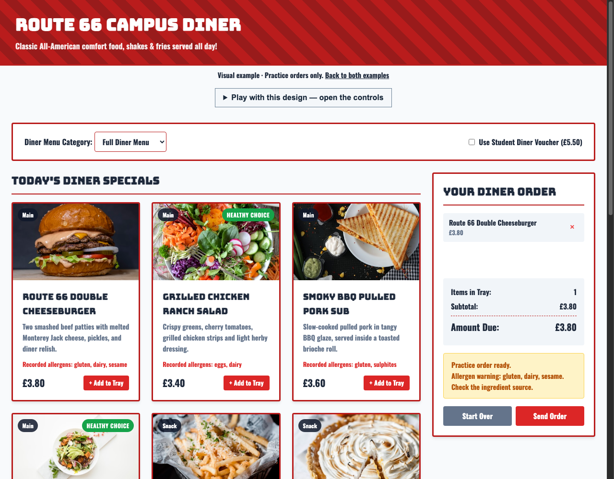
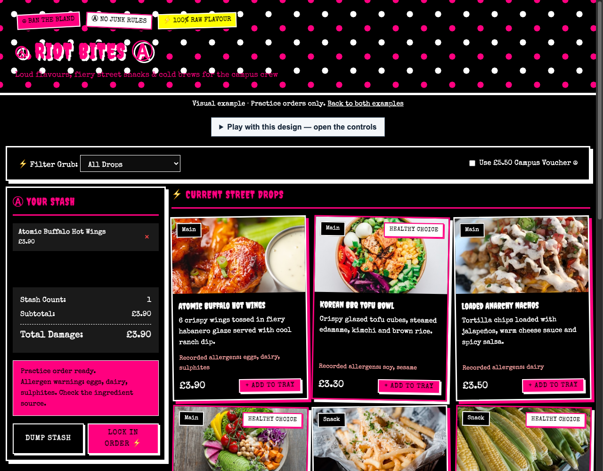

Route 66 Campus Diner

Retro lettering, red stripes and a tray on the right.
Open the dinerLevel 1 · Your project hub
Make your own canteen app
Explore an example. Choose your own look. Build it one small step at a time.
Open Guide 1: Start here in your browser first. It includes the repository link and VS Code steps to make your own copy. Keep the guide open while you set up.
Already started? Open your existing project folder in VS Code and continue your work.
Add food to the tray. Try the voucher. Open “Play with this design” to change the look, then reset it.

Retro lettering, red stripes and a tray on the right.
Open the diner
Pink and black, tilted cards and a tray on the left.
Open Riot BitesWhich design helps you read and choose? What would you change for your audience?
Explore the working starter before making your own copy.
1 · Start here: setup, research and plan2 · Try CSS changes live, then design your app3 · Try small JavaScript activitiesFinish · Test, save and hand inYour starter already works. Supplied functions let you keep designing while you learn to code.